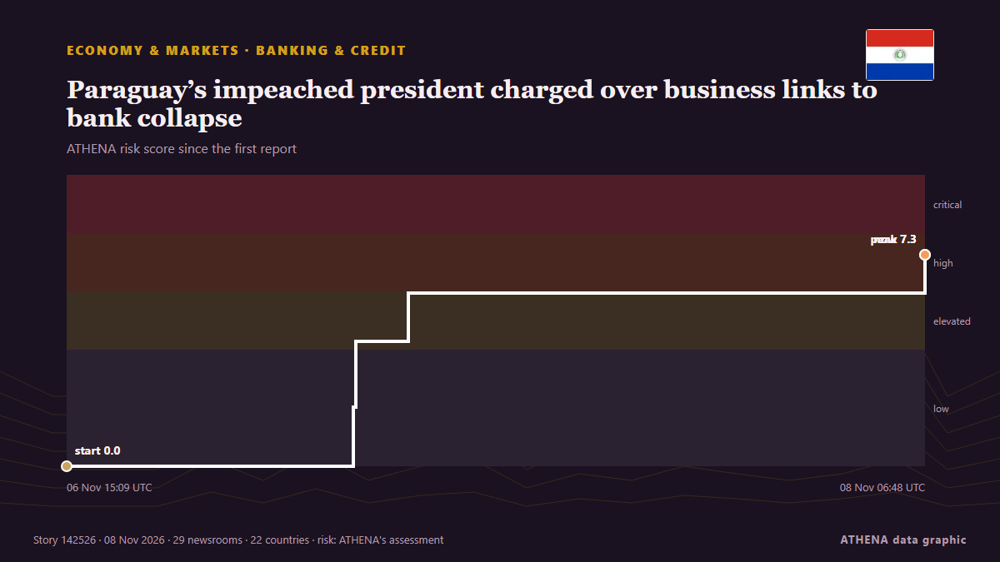

Économie
L'économie mondiale aujourd'hui
Dernières 24 heures — événements : 48, pays : 34. Risque le plus élevé : 4.2 — Bank of Korea hikes rate to 3.25% against backdrop of strong economy.

Économie et marchésParaguay’s impeached president charged over business links to bank collapse
Paraguay’s impeached president Santiago Peña was on Saturday charged over his business links to a major online bank whose sudden collapse locked millions of people out of their money and sparked… de France 24 English
| 14 nov. | 8 |
|---|---|
| 15 nov. | 18 |
| 16 nov. | 49 |
| 17 nov. | 42 |
| 18 nov. | 35 |
| 19 nov. | 35 |
| 20 nov. | 19 |
| 21 nov. | 18 |
| 22 nov. | 16 |
| 23 nov. | 37 |
| 24 nov. | 25 |
| 25 nov. | 22 |
| 26 nov. | 33 |
| 27 nov. | 4 |
Suivis
Dernières infos
Cyberattack Hits French Blood Bank Site but No Blood Products Are Compromised
A cyberattack on several blood banks tried to raise temperatures to extremely high levels but was thwarted before it could do any damage to blood products or samples, French authorities said. de Korea Herald
Pope urges Argentina's Milei to put people before economy
Pope Leo XIV has urged Argentina to protect democracy and ensure economic growth benefits the poor, delivering a message to President Javier Milei over austerity, social welfare and political… de DW English
UN probe accuses Israel of 'extermination' in West Bank
GENEVA, Switzerland — Israel has committed the crime against humanity of "extermination" in the West Bank, while continuing to commit "genocide" against Palestinians in the Gaza Strip, United… de The Korea Times
Bangladesh raises minimum wage for garment workers after weeks of protests
A government-formed wage board in Bangladesh has raised the minimum monthly wage for entry-level garment workers by 36% to 17,000 takas, or $136, from 12,500 takas after weeks of violent protests. de ABC News (International)
Spain's De Cos set to become next ECB president
Former Bank of Spain Governor and current Bank for International Settlements General Manager Pablo Hernandez de Cos was supposedly endorsed by a majority of European countries as the next European… de AzerNews
Downdetector reports outages at major US banks
User reports on Monday indicated problems at JPMorgan Chase, Bank of America, U.S. de The Korea Times
China's giant pandas make public debut at US zoo
The pair are to be hosted in the southern US facility for the next 10 years. de The Straits Times
Trump demands probe into ‘fake’ US GDP figures
President Donald Trump called Thursday for an investigation into a routine revision of economic growth figures as he pushed his groundless claims of interference in the US midterm elections. de Vanguard
Qantas to outsource 850 local jobs with most roles moving to India
The Australian airline said the move was aimed at modernising its IT systems and noted the impact of AI. de BBC Business
Bank of Korea hikes rate to 3.25% against backdrop of strong economy
Intermodal marketing companies and railroads are using ongoing bid negotiations to raise rates in annual agreements for 2027. de The Journal of Commerce (JOC)
EU proposes new €45bn Ukraine loan for 2027
New cash is ‘best way to give Ukraine a strong hand at the negotiation table' de Euractiv
EU Proposes Tax on Big Tech to Boost Budget
EU nations clash over 2028-34 budget, with Germany pushing for cuts to the proposed €2 trillion plan. de Express Tribune
Ce que couvre cette page
Cette page suit les événements qui font bouger l'économie mondiale : croissance, inflation, taux d'intérêt, banques centrales, dette publique, emploi et commerce. Chaque événement est recoupé par des médias indépendants et noté pour le risque ; une affirmation venant d'une seule source n'est pas présentée comme un fait.
À lire avec Marchés, qui montre ce que les prix ont fait, et Maritime, qui montre ce qui se passe sur les routes commerciales et l'approvisionnement en énergie. Ensemble, ils montrent comment un événement politique atteint l'argent et les marchandises.
Ce que nous suivons
- Décisions des banques centrales et trajectoire des taux
- Publications sur l'inflation, la croissance et l'emploi
- Prix et approvisionnement de l'énergie
- Dette publique et notations
- Droits de douane, mesures commerciales et sanctions
- Les économies grecque et chypriote